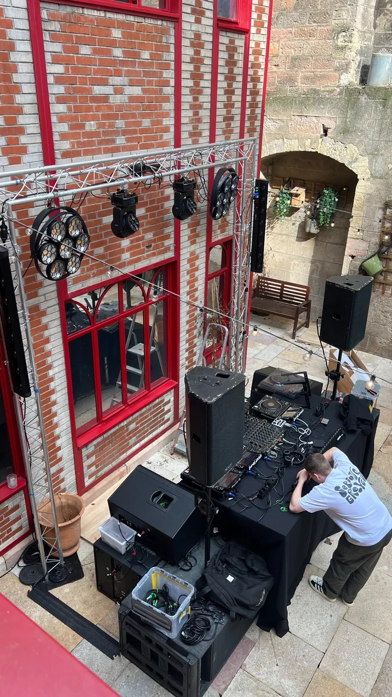
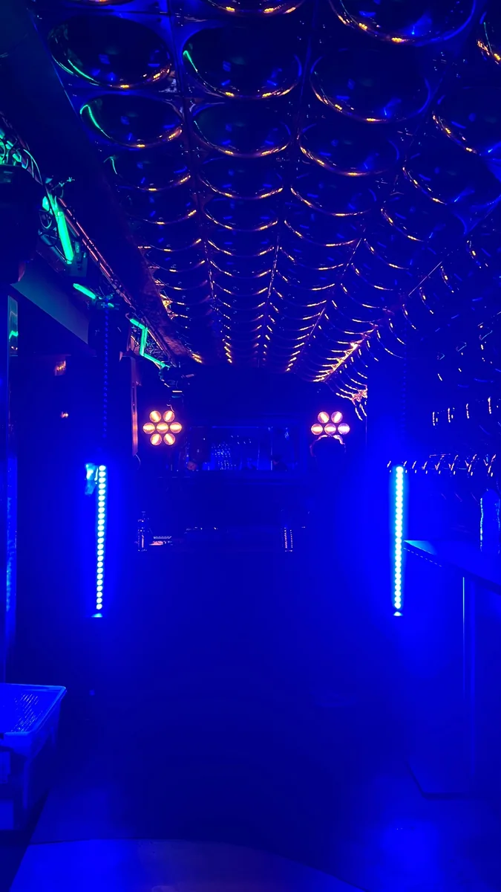

Location son
Enceintes, caissons, configurations compactes ou plus puissantes selon le besoin.
Pulse
Pulse accompagne les soirées privées, événements associatifs, repas d’entreprise et configurations DJ avec du matériel adapté, une installation propre et une préparation sérieuse.
Prestations
L’objectif est de proposer une solution cohérente avec la taille de l’espace, le type de public, la musique, les contraintes d’installation et le rendu attendu.
Enceintes, caissons, configurations compactes ou plus puissantes selon le besoin.
Ambiance, faisceaux, lyres, effets lumineux et mise en valeur du lieu.
Implantation, câblage, essais, réglages et sécurisation de la zone technique.
Préparation en amont, adaptation sur site et coordination avec le DJ ou l’organisateur.
Matériel & rendu
Pulse peut intervenir sur des formats variés : petite soirée, réception, cour intérieure, salle des fêtes, scène associative ou installation privée. Le matériel est sélectionné selon la couverture sonore, l’ambiance et les contraintes du lieu.
Lumière
Les lumières permettent de transformer un espace simple en véritable zone événementielle : couleurs, faisceaux, rythme visuel, ambiance chaude ou plus club.
Selon le lieu, Pulse peut proposer une mise en lumière discrète, une configuration plus dynamique, ou une installation complète associant sonorisation et effets lumineux.
Installations Pulse






Pulse